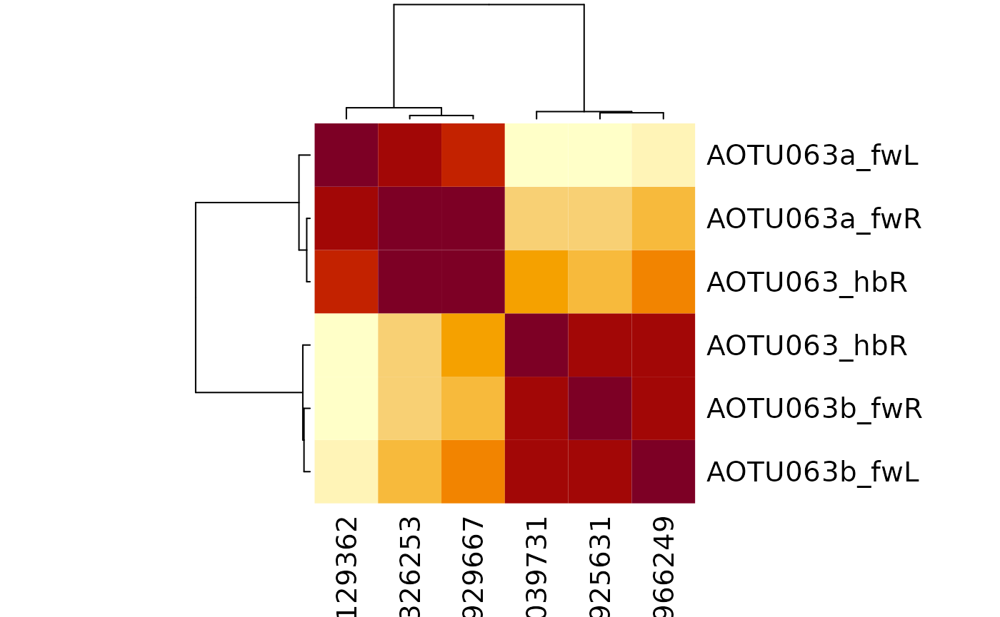

Intro
In Fig 6 of our manuscript Schlegel et al 2023 we show an example of across-dataset cell typing using AOTU063 as an example.
Fig 6A Schlegel et al 2023 bioRxiv
We should be able to recapitulate the basic features of this analysis here.
library(coconatfly)
#> Loading required package: nat
#> Loading required package: rgl
#> Registered S3 method overwritten by 'nat':
#> method from
#> as.mesh3d.ashape3d rgl
#> Some nat functions depend on a CMTK installation. See ?cmtk and README.md for details.
#>
#> Attaching package: 'nat'
#> The following object is masked from 'package:rgl':
#>
#> wire3d
#> The following objects are masked from 'package:base':
#>
#> intersect, setdiff, union
library(dplyr)
#>
#> Attaching package: 'dplyr'
#> The following objects are masked from 'package:nat':
#>
#> intersect, setdiff, union
#> The following objects are masked from 'package:stats':
#>
#> filter, lag
#> The following objects are masked from 'package:base':
#>
#> intersect, setdiff, setequal, union
aotu63=cf_meta(cf_ids(query = '/type:AOTU063.*', datasets = c("flywire","hemibrain")))
#> Loading required namespace: git2r
aotu63
#> id side class type group instance dataset
#> 1 720575940620326253 R central AOTU063a <NA> AOTU063a_R flywire
#> 2 720575940618697118 L central AOTU063b <NA> AOTU063b_L flywire
#> 3 720575940621925631 R central AOTU063b <NA> AOTU063b_R flywire
#> 4 720575940631129362 L central AOTU063a <NA> AOTU063a_L flywire
#> 5 791039731 R <NA> AOTU063 <NA> AOTU063(SCB058)_R hemibrain
#> 6 800929667 R <NA> AOTU063 <NA> AOTU063(SCB058)_R hemibrain
#> key
#> 1 fw:720575940620326253
#> 2 fw:720575940618697118
#> 3 fw:720575940621925631
#> 4 fw:720575940631129362
#> 5 hb:791039731
#> 6 hb:800929667
aotu63 %>%
cf_cosine_plot()
#> Matching types across datasets. Dropping 177/421 output partner types with total weight 3102/10892
#> Matching types across datasets. Dropping 370/1011 input partner types with total weight 4789/17752
We can get the dendrogram for this clustering
aotu63.hc = cf_cosine_plot(aotu63, heatmap = FALSE)
#> Matching types across datasets. Dropping 177/421 output partner types with total weight 3102/10892
#> Matching types across datasets. Dropping 370/1011 input partner types with total weight 4789/17752
plot(aotu63.hc)And then cut it in two and extract those two clusters using the coconat::add_cluster_info() helper function.
aotu63=coconat::add_cluster_info(aotu63, dend=aotu63.hc, k=2)
#> Warning in coconat::add_cluster_info(aotu63, dend = aotu63.hc, k = 2): Multiple standard id columns are present in aotu63
#> Choosing key
aotu63 %>%
select(side, type, dataset, group_k2, key) %>%
arrange(group_k2, side)
#> side type dataset group_k2 key
#> 1 L AOTU063a flywire 1 fw:720575940631129362
#> 2 R AOTU063a flywire 1 fw:720575940620326253
#> 3 R AOTU063 hemibrain 1 hb:800929667
#> 4 L AOTU063b flywire 2 fw:720575940618697118
#> 5 R AOTU063b flywire 2 fw:720575940621925631
#> 6 R AOTU063 hemibrain 2 hb:791039731So from this we can see that group 2 seems to the “b” type.
Finding the partners that define the types
What might distinguish these two types? We can fetch, say, the input partners, and then look at how connection strength varies across the types.
To get started let’s redefine the type of our 6 query neurons based on the clustering. Then fetch the input partners and merge in the the AOTU063 type (i.e. AOTU063a or AOTU063b) as a new column called qtype
aotu63v2=aotu63 %>%
mutate(type=case_when(
group_k2==1 ~ 'AOTU063a',
group_k2==2 ~ 'AOTU063b'
))
aotu63in <- cf_partners(aotu63, partners = 'in', threshold = 10)
aotu63in
#> # A tibble: 625 × 8
#> pre_id post_id weight side type dataset pre_key post_key
#> <int64> <int64> <int> <chr> <chr> <chr> <chr> <chr>
#> 1 7e17 7e17 118 R LT52 flywire fw:720575940640004174 fw:720575…
#> 2 7e17 7e17 109 R LT52 flywire fw:720575940618982725 fw:720575…
#> 3 7e17 7e17 109 R AOTU041 flywire fw:720575940627738640 fw:720575…
#> 4 7e17 7e17 96 L LT52 flywire fw:720575940612465777 fw:720575…
#> 5 7e17 7e17 95 R LT52 flywire fw:720575940612837811 fw:720575…
#> 6 7e17 7e17 90 L AOTU042 flywire fw:720575940619453861 fw:720575…
#> 7 7e17 7e17 87 R SIP034 flywire fw:720575940628728172 fw:720575…
#> 8 7e17 7e17 83 R LT52 flywire fw:720575940626024336 fw:720575…
#> 9 7e17 7e17 83 R AOTU041 flywire fw:720575940638668659 fw:720575…
#> 10 7e17 7e17 82 R AOTU014 flywire fw:720575940620321158 fw:720575…
#> # ℹ 615 more rows
# note that AOTU063 neurons will be the postsynaptic partners in this dataframe
aotu63in <- aotu63in %>%
left_join(
aotu63v2 %>% mutate(qtype=type) %>% select(qtype, key),
by=c("post_key"='key'))
aotu63in %>%
select(weight, type, qtype)
#> # A tibble: 625 × 3
#> weight type qtype
#> <int> <chr> <chr>
#> 1 118 LT52 AOTU063b
#> 2 109 LT52 AOTU063b
#> 3 109 AOTU041 AOTU063a
#> 4 96 LT52 AOTU063b
#> 5 95 LT52 AOTU063b
#> 6 90 AOTU042 AOTU063a
#> 7 87 SIP034 AOTU063a
#> 8 83 LT52 AOTU063b
#> 9 83 AOTU041 AOTU063a
#> 10 82 AOTU014 AOTU063b
#> # ℹ 615 more rowsOk with that preparatory work we can now make a summary of the inputs across the different types and datasets. This pipeline is a little more involved, but oif you follow each step it should make sense.
aotu63in %>%
mutate(dataset=abbreviate_datasets(dataset)) %>%
# FlyWire has e.g. LC10a LC10c annotated, but not hemibrain
mutate(type=case_when(
grepl("LC10", type) ~ "LC10",
T ~ type
)) %>%
group_by(qtype, dataset, type) %>%
summarise(weight=sum(weight)) %>%
arrange(desc(weight)) %>%
tidyr::pivot_wider(names_from = c(qtype, dataset), values_from = weight, values_fill = 0) %>%
# convert from raw to pct
mutate(across(-type, ~round(100*.x/sum(.x))))
#> `summarise()` has grouped output by 'qtype', 'dataset'. You can override using
#> the `.groups` argument.
#> # A tibble: 46 × 5
#> type AOTU063a_fw AOTU063b_fw AOTU063a_hb AOTU063b_hb
#> <chr> <dbl> <dbl> <dbl> <dbl>
#> 1 LC10 56 46 56 45
#> 2 LT52 7 31 11 26
#> 3 SIP034 7 0 5 0
#> 4 NA 6 2 0 0
#> 5 AOTU041 5 2 5 1
#> 6 AOTU042 4 3 3 2
#> 7 AOTU014 0 5 0 5
#> 8 VES041 3 0 3 0
#> 9 AOTU065 2 2 2 2
#> 10 AOTU028 2 0 2 0
#> # ℹ 36 more rowsSo we can see that the top few cell types already suggest a number of likely explanations.
For example LC10 provides 10% more input for AOTU063a vs AOTU063b while LT52 input is much stronger for AOTU063b than AOTU063a. Crucially these patterns are consistent across datasets.
Distinctive output partners
aotu63out <- cf_partners(aotu63, partners = 'out', threshold = 10)
aotu63out <- aotu63out %>%
left_join(
aotu63v2 %>% mutate(qtype=type) %>% select(qtype, key),
by=c("pre_key"='key'))
aotu63out %>%
mutate(dataset=abbreviate_datasets(dataset)) %>%
# FlyWire has e.g. LC10a LC10c annotated, but not hemibrain
mutate(type=case_when(
grepl("LC10", type) ~ "LC10",
T ~ type
)) %>%
group_by(qtype, dataset, type) %>%
summarise(weight=sum(weight)) %>%
arrange(desc(weight)) %>%
tidyr::pivot_wider(names_from = c(qtype, dataset), values_from = weight, values_fill = 0) %>%
# convert from raw to pct
mutate(across(-type, ~round(100*.x/sum(.x))))
#> `summarise()` has grouped output by 'qtype', 'dataset'. You can override using
#> the `.groups` argument.
#> # A tibble: 70 × 5
#> type AOTU063a_fw AOTU063b_fw AOTU063a_hb AOTU063b_hb
#> <chr> <dbl> <dbl> <dbl> <dbl>
#> 1 IB008 15 11 14 9
#> 2 DNa10 12 11 9 7
#> 3 IB010 11 5 8 5
#> 4 DNde002 3 9 0 0
#> 5 AOTU007 8 7 6 8
#> 6 VES064 7 4 5 4
#> 7 DNae011 7 3 0 0
#> 8 DNbe004 6 0 0 0
#> 9 NA 5 2 0 0
#> 10 AOTU024 1 6 1 2
#> # ℹ 60 more rowsHere things are not quite obvious but IB008/IB010 look different and some of the newly defined DNs in FlyWire like DNde002/DNbe004/DNae011 looks like they might be interesting.